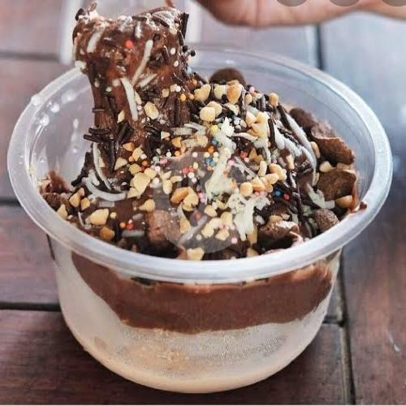

Home
Es Kepal Milo Recipe

A popular Indonesian dessert made with crushed ice and Milo chocolate drink.
Es Kepal Milo is a delightful Indonesian dessert that features a base of finely crushed ice, topped generously with Milo, a chocolate malt drink mix.
Ingredient
For the Ice:
- 2 cups crushed ice (or ice cubes blended into fine ice)
- 1 cup Milo powder (or chocolate malt drink)
- 1/2 cup condensed milk (adjust to taste)
- 1/2 cup milk (whole or evaporated)
Toppings (optional):
- Chocolate syrup
- Sprinkles
- Additional Milo powder
- Sliced fruits (like bananas or strawberries)
Steps
- Prepare the Ice:
- Crush the ice in a blender or food processor until it’s fine and resembles snow.
- Mix Milo and Milk:
- In a bowl, combine the Milo powder and milk. Stir until the Milo is fully dissolved. You can adjust the sweetness by adding more or less condensed milk to this mixture.
- Assemble the Dessert:
- In serving bowls or cups, place a generous amount of crushed ice.
- Pour the Milo-milk mixture over the ice until it’s well coated.
- Add Toppings:
- Drizzle with condensed milk and chocolate syrup, and sprinkle with Milo powder or toppings of your choice.
- Serve:
- Enjoy your refreshing Es Kepal Milo right away!
Feel free to customize it with your favorite toppings for extra flavor!